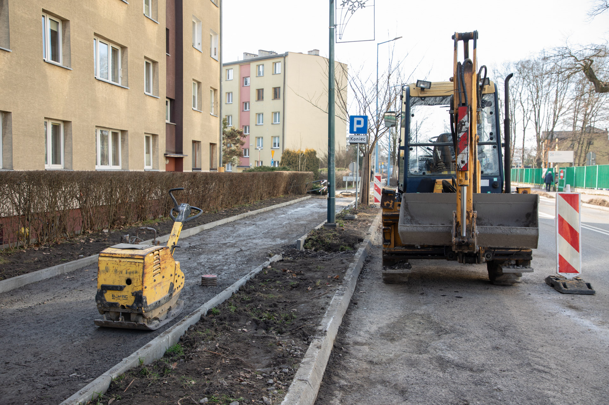

Remont ul. Długiej rusza w listopadzie

Impulsem do organizacji patroli było fizyczne starcie między grupą Polaków a grupą migrantów z Ameryki Łacińskiej, do którego doszło na plaży nad Jeziorem Grzymysławskim w Śremie.
Jak podaje portal ePoznan.pl, pierwszy patrol zebrał się w Kórniku, a zorganizował go lokalny zawodnik MMA Rafał Podejma, prowadzący na YouTubie kanał Antykonfident. W jednym ze swoich filmów prowadzący wzywa do tego, by w trakcie patroli zachować spokój, strzec się prowokatorów, nie wdawać się w konflikty z policją. Łamiącym się głosem, niemalże ze łzami w oczach, mówi: „jeżeli my to spie***limy teraz to te k***y przejmą nasz kraj. […] Odbierają nam kurwa wolność, mordują naszych braci na ulicach, gwałcą nasze dziewczyny. […] To jest nasz kraj i go nie oddamy. […] My się śmierci nie boimy, bo my jesteśmy potomkami husarii, jesteśmy potomkami Wikingów (sic!) i mamy ich duszę. Bo dusza nigdy nie umiera, pamiętajcie o tym”.

Trasa linii 66 zostanie skrócona do relacji Zawodzie Centrum Przesiadkowe – Dziećkowice Łukasiewicza, a kursy wariantowe linii 954 zostaną skrócone do przystanku Dziećkowice Łukasiewicza.
Z obsługi zostaną wyłączone przystanki: Dziećkowice Długa 137, Dziećkowice Wapiennik, Dziećkowice Jazd, Imielin Autostrada, Imielin Maratońska, Gołcówka ZPW oraz przystanki: Gołcówka Poniatowskiego, Imielin Wandy, Imielin Rynek, Imielin Wiadukt i Imielin Sosnowa 02, które nie będą obsługiwane w kursach linii 66 wydłużonych do przystanku Imielin Sosnowa.
W celu zapewnienia możliwości bezpośredniego połączenia pomiędzy Dziećkowicami a Imielinem uruchomiona zostanie specjalna, tymczasowa linia autobusowa 966, kursująca na trasie Dziećkowice Długosza – Imielin Rynek.
Trasa 966 w kierunku Imielina: Dziećkowice Długosza 31 – Dziećkowice Jazd 01 – Imielin Autostrada 01 – Imielin Maratońska 02 – Gołcówka ZPW 01 – Gołcówka Poniatowskiego 02 – Imielin Wandy 02 – Imielin Rynek 02.
Trasa 966 w kierunku Dziećkowic: Imielin Rynek 02 – Imielin Wandy 01 – Gołcówka Poniatowskiego 01 – Gołcówka ZPW 02 – Imielin Maratońska 01 – Imielin Autostrada 02 – Dziećkowice Jazd 02 – Dziećkowice Długosza 32.
Stanowiska tymczasowe: Dziećkowice Długosza 31 i 32 – zlokalizowane są między posesjami przy ul. Długosza nr 224 a 226.